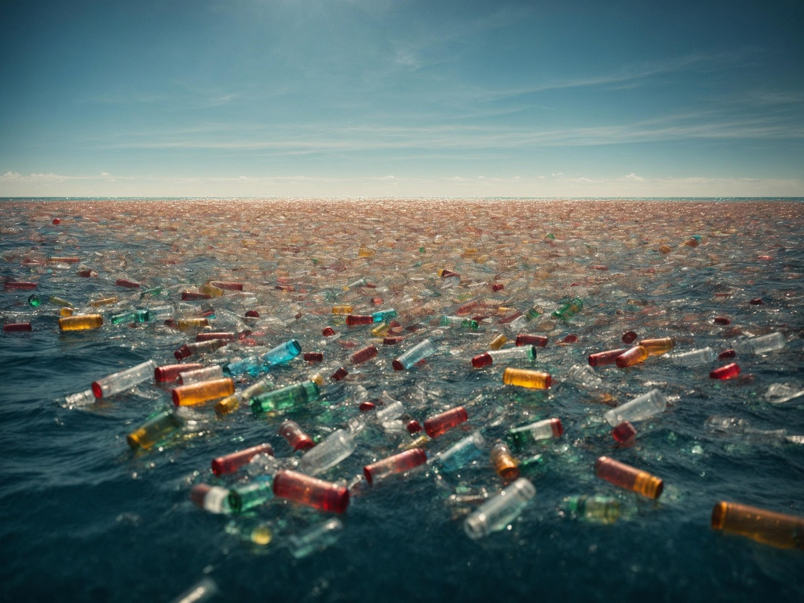

Save the Ocean

Ocean with Plastic Bottle by Pixabay.
Every year, millions of tons of plastic end up in our oceans, threatening marine life and polluting coastlines worldwide. From floating debris to microplastics invisible to the eye, this waste harms sea creatures and even enters our food chain. By understanding the impact of ocean plastic, we can start making small daily changes that lead to a cleaner, healthier planet.